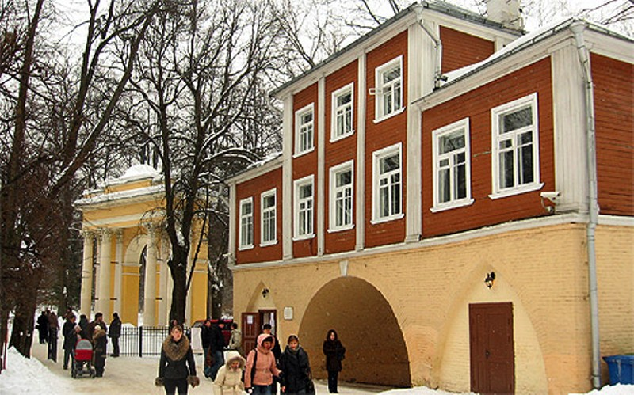

|  | Министерство культуры Российской Федерации Портал Культура.рф Проект «Образы России» |
Музей-усадьба Архангельское
Кладовая над оврагом

«Большая улица села Архангельского» в кон.XVIII- XIX в. – средоточие хозяйственной жизни имения. Улица представляла собой участок проходившей через усадьбу дороги из дер. Захарково в дер. Воронки. Здесь она имела вид «прешпекта», обсаженного липой, на который выходили с севера здание Суконной фабрики (арх.Е.Д.Тюрин, 1819-1820), «Хлебный магазин» (оба не сохр.), «Житный двор» с гостиницей («Домом для приезжающих»), амбаром, сенными и каретными сараями (не сохр.), Конторский флигель, «Кладовая над оврагом», людские флигеля и мастерские (не сохр.). У въезда в усадьбу, с южной стороны Улицы, в 1824-25 Е.Д.Тюрин выстроил «Святые ворота». По сторонам от аллеи к старинной церкви Архангела Михаила располагались Больница для крестоян и дома церковных служителей ( не сохр.) Деревянные башенки на ряде зданий (ок.1816. арх.О.И.Бове – не сохр.) придавали местности вид нарядного городка.